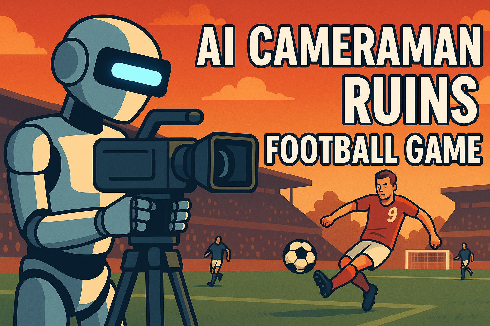

Model Evaluation
Last updated on 2025-07-09 | Edit this page
Overview
Questions
- How can I tell if my machine learning model is performing well?
- What metrics should I use to evaluate it?
Objectives
- Explain why we evaluate machine learning models
- Understand how to select appropriate evaluation metrics
Introduction
In our previous sessions, we’ve designed a question, explored how to clean and prepare data, built machine learning models, and used them to make predictions. Now we turn to an equally important question:
How do we know if our models are actually any good?
It might be tempting to think that once we’ve trained a model and it predicts well on the data we gave it, our job is done. But without proper evaluation, we risk building models that aren’t performing in a way we expect.
Case Study: ⚽ AI Camera Operator
Imagine you are in charge of media relations for a lower tier football club. You want to make more of the matches accessible to the fans, especially those who can’t attend in person. To achieve this, you hire a company that installs an AI-powered camera operator at your stadium. Full television cameras and paying the salary of a camera operator are unsustainable, but this seems like a workable option.
They promise impressive results, boasting extremely high accuracy in tracking the ball across the pitch in real time. Impressed by this cutting-edge technology, you announce to your fans that they can now enjoy live coverage online, every exciting moment, from the comfort of their homes.
Game day rolls around, fans tune in. But instead of watching the ball move up and down the pitch, they’re treated to something else entirely…
Watch:

Source: ND-TV
The camera’s AI had been trained to detect the ball (which it was good at), but during the match it repeatedly mistook the bald head of the linesman for the football anytime the ball was obscured. This resulted in the camera constantly panning away from the action. Fans were justifiably frustrated, and the club faced a fair amount of embarrassment.
This is a classic real-world reminder that:
- Even a model with “high accuracy” might fail in practice if its evaluation wasn’t well thought-through and tested in realistic conditions.
- Single metrics often don’t guarantee the model works as intended.
Proper evaluation, with representative data and thoughtful metrics, is critical to reduce the chance of costly or embarrassing mistakes like this.
So what can we do?
A thoughtful evaluation process does much more than simply reporting a model’s accuracy. It involves considering a range of relevant metrics to make informed, data-driven assessments.
- We can choose metrics that align with our specific research, for example, emphasising recall if missing a positive case is especially costly, or prioritising precision if false positives are particularly disruptive.
- We can look at multiple metrics together, rather than relying on a single number, to get a more complete understanding of our model’s performance.
- We can evaluate our model using metrics that are widely applied in the literature for similar problems, ensuring our results are comparable and grounded in established practice.
- We can investigate how our model performs across different subgroups or edge cases, helping us detect bias or weaknesses that overall metrics might hide.
By systematically evaluating our models this way, we ensure they are not only accurate, but also fair, robust, and truly fit for their intended purpose. This greatly reduces the risk of deploying a model that fails to perform as we expect in the real world.
Error Metrics
An error metric is simply a quantitative measure of how wrong your model’s predictions are. It tells you how far off your predictions are from the actual values.
Different metrics capture different notions of “error.” For example:
- In classification, an error metric might count how often you predict the wrong class (like misclassifying a healthy patient as sick).
- In regression, it might measure how large the differences are between your predicted and actual numbers.
Why do we need them?
Because without an error metric:
- You have no objective way to judge how good (or bad) your model is.
- You have no way to compare two models to see which one performs better.
It is important that it is a well-chosen error metric:
Just like we need to choose the right methods to clean our data and the right model for our specific problem, we also need to pick the correct error metric. This ensures we are assessing our model based on what truly matters for our goals.
How Do I Pick The Correct Metric?
Unfortunately, there’s no simple one-size-fits-all answer here the best error metric depends on the specifics of your problem and what matters most in your context.
However, we can use the type of problem to narrow down the set of metrics that are likely to be appropriate. From there, it’s about matching the metric to your goals or your tolerance for different kinds of mistakes.
Classification metrics

Regression metrics
When our model predicts continuous numeric values, we use different metrics than for classification tasks. Two of the most common are Mean Absolute Error (MAE) and Mean Squared Error (MSE).
Mean Absolute Error (MAE)
MAE measures the average of the absolute differences between predicted values and actual values.
MAE is useful when you care about the average magnitude of errors without heavily penalising outliers.
Mean Squared Error (MSE)
MSE measures the average of the squares of the errors — the average squared difference between the predicted values and the actual values.
Because the differences are squared, larger errors have a disproportionately big impact on the final value. This means MSE is very sensitive to outliers.
MSE is useful when you want to penalise large errors more severely.

*by Ebrahim Mousavi, The
amount of error produced in MAE and MSE
Other Metrics You Could Explore
| Metric | What it measures | Highlights / When to use |
|---|---|---|
| RMSE (Root Mean Squared Error) | Square root of the average squared errors | Same units as target. Penalises large errors more heavily. Helpful when large mistakes are especially costly. |
| R² (Coefficient of Determination) | Proportion of variance in the target explained by the model | Indicates overall fit. Values near 1 mean model captures most variability. |
| MSLE (Mean Squared Log Error) | Average squared differences of log-transformed predictions | Useful for targets that grow exponentially or where you care about relative differences. Penalises under-predictions more than over-predictions. |
| MAPE (Mean Absolute Percentage Error) | Average absolute percent errors between predicted and actual values | Intuitive as a %. Helps communicate typical error size relative to true values. |
Model comparison
Often we don’t build just one model, we try several. This can be to test how effective different models are or the same model but with different sets of features or different hyperparameters.
It is good practice to compare models to assess which one best meets our goals:
Maintain comparisons using multiple metrics.
Use cross-validated results, not just a single train/test split.
Statistical tests
Sometimes, the differences in performance between the models are
small.
Running statistical tests helps us answer:
Are these differences likely due to random chance, or is one model truly better?
For example:
Use statistical testing on the metrics from multiple models.
Use permutation tests to see how often differences this large would arise by chance.
This helps avoid over-interpreting small differences that might just be noise.
Robustness checks
Robustness is about asking:
Does my model keep performing well under different
conditions?
This might include:
Testing on new time periods, slightly different datasets, or under simulated transformations.
Checking sensitivity to outliers, missing data, or small changes in inputs.
Robustness checks ensure that your model isn’t overly fine-tuned to quirks of your particular dataset, and gives confidence it will work in the real world or on new data.
Applying What You’ve Learned
Now that we’ve explored why evaluation matters it’s time to bring it all together.
Think about your own machine learning problem
-
Consider:
- What type of problem is it?
- What kinds of mistakes are most important to avoid?
- Are there certain groups or scenarios where getting it right matters more?
- What other risks should you think about?
Investigate and list at least two metrics that would make sense for evaluating your model. Explain why these metrics fit your specific goals and constraints.
-
Also, consider:
- If you might compare models?
- Do robustness checks make sense for your problem?
✅ By the end, you should have a short checklist of what metrics, comparisons, and additional checks would be meaningful for your problem.
If you are unsure please ask for help.
Key Points
- Evaluating a machine learning model goes far beyond just reporting its accuracy.
- Use the type of problem you’re solving to help determine which metrics are appropriate.
- Choosing the right error metrics ensures you assess what truly matters for your goals.
- Model comparison, statistical testing, and robustness checks help you select not only the best-performing model, but one that generalises well to new data and different scenarios.
- Proper evaluation reduces the risk of costly, or misleading outcomes.